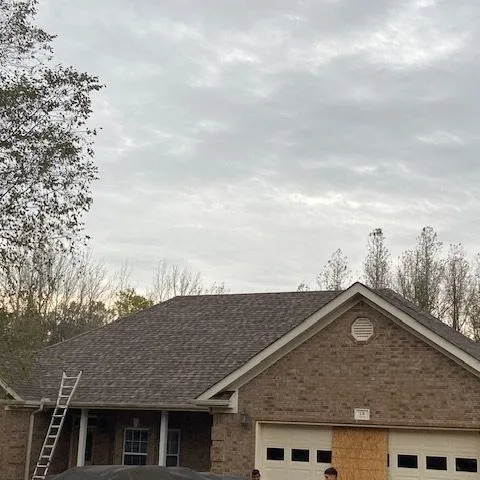
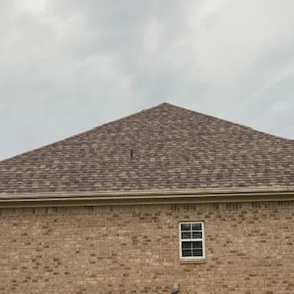

Roofing across Central Arkansas
Based in Cabot and Little Rock, serving communities across Arkansas.
Cities and towns we serve
We serve these 21 communities. Not on the list? Call and ask.
- Austin, AR
- Bald Knob, AR
- Beebe, AR
- Cabot, AR
- Conway, AR
- Fort Smith, AR
- Gravel Ridge, AR
- Greenbrier, AR
- Hazen, AR
- Jacksonville, AR
- Judsonia, AR
- Kensett, AR
- Little Rock, AR
- Maumelle, AR
- Mayflower, AR
- North Little Rock, AR
- Russellville, AR
- Searcy, AR
- Sherwood, AR
- Vilonia, AR
- Ward, AR
